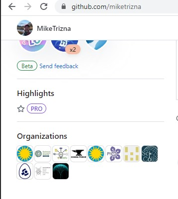
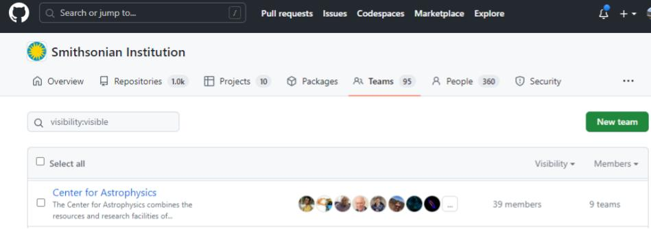

Smithsonian Specifics#
Organizations on GitHub#
So far we have gone through all of the exercises in this workshop using our personal GitHub accounts. But GitHub has organizations, which allow for more capabilities.
Benefits of Organizations: Branding#
Putting a repository in an organization can give you a more fitting link to share. For example, all of the Smithsonian Carpentries workshop websites are on either the “Smithsonian” or “SmithsonianWorkshops” (which actually came first) organizations. So the URL for today’s workshop is https://smithsonianworkshops.github.io/2023-05-09-smithsonian/.
Also, if you join the Smithsonian organization (info on how to do that is below), you can get a little indicator that shows you are affiliated with the Smithsonian. This is helpful when using your GitHub profile as a portfolio.

Benefits of Organizations: Teams#
In the “GitHub Issues and Pull Requests” section, we showed how to connect with other GitHub users on a user-by-user level. However, GitHub organizations offer the concept of Teams, which let you put together groups of users that have pre-defined permissons. For example, you can create a new lesson repository (like this one) in the Smithsonian organization, and give direct edit permissions to the entire Carpentries team.

How to join the Smithsonian organization#
Here is a Smithsonian KnowledgeBase article about GitHub.
The best way to request to join the Smithsonian organization is to put in a ServiceNow request.